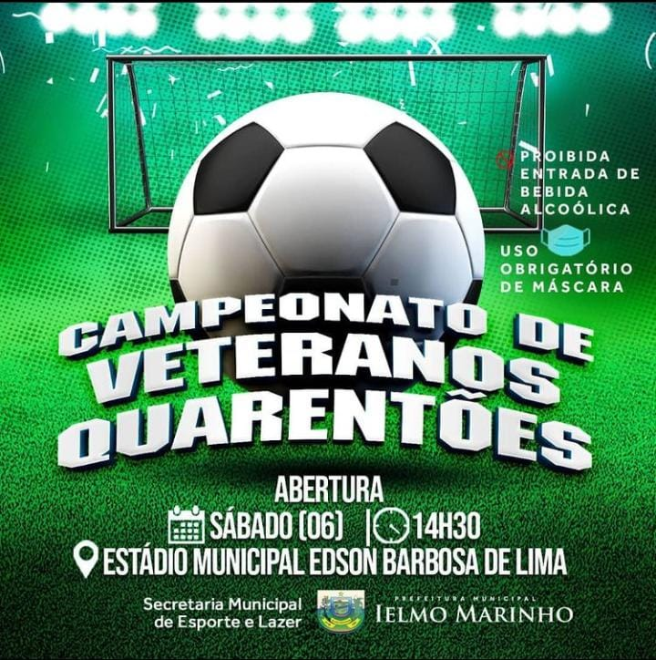

|  |
Campeonato dos Quarentões
A prefeitura de Ielmo Marinho, anunciou nesta semana o
inicio do Campeonato do Quarentões...
Leia mais...
Escrito por: IM Notícias, 08:00 / 08 de Novembro de 2021
|
 |
Aniversário de Ielmo Marinho
No último mês de agosto, a cidade de Ielmo Marinho/rn
completo 58 anos de historia e em comemoração a está data
trouxemos um pouco de sua história...
Leia mais...
Escrito por: IM Notícias, 08:00 / 08 de Novembro de 2021
|
 |
Festa do abacaxi
Prefeitura de Ielmo Marinho realiza, no período de 8 a
10 de setembro,
no distrito de Umari....
Leia mais...
Escrito por: IM Notícias, 08:00 / 08 de Novembro de 2021
|